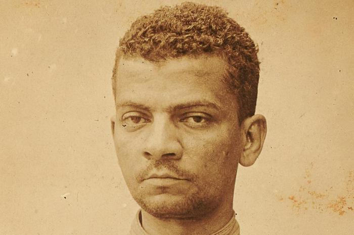

- Estudar HTML
- Estudar CSS
- Estudar JS
Machado de Assis ou "Bruxo do Cosme Velho"
Livros e flores
Teus olhos são meus livros.Que livro há aí melhor,
Em que melhor se leia
A página do amor?
Flores me são teus lábios.
Onde há mais bela flor,
Em que melhor se beba
O bálsamo do amor?
Lima Barreto "Afonso Henriques de Lima Barreto"

Passagem do livro "O Triste fim de Policarpo Quaresma"
“De todas as coisas tristes de ver, no mundo, a mais triste é a loucura; é a mais depressora e pungente.”
—Aquele Quaresma podia estar bem, mas foi meter-se com livros... É isto! Eu, há bem quarenta anos, que não pego em livro...”
Sobre
Repositório de exercícios, experimentos e projetos da disciplina.